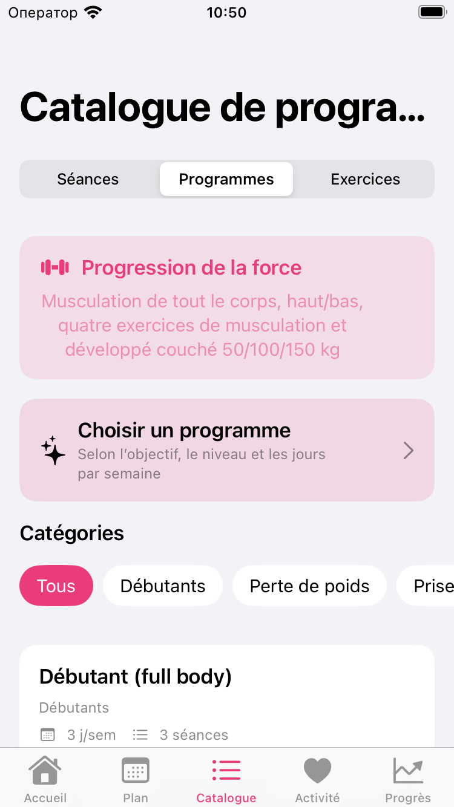
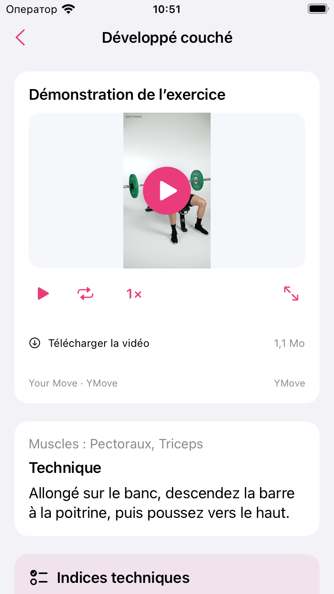

Par Nikita Revin, développeur de Tonus · 2 novembre 2026
Cherchez un exercice par son nom ou un muscle, parcourez les catégories et consultez sa technique avant de lancer une séance dans Tonus.
Vous voulez relire la consigne d’un mouvement avant de commencer ? Le catalogue d’exercices de Tonus permet de retrouver sa fiche sans lancer le chronomètre d’une séance. La recherche porte sur le nom de l’exercice et les muscles indiqués dans le catalogue.
Passer du catalogue de programmes aux exercices
Ouvrez l’onglet Catalogue en bas de l’écran, puis le segment Exercices en haut. Séances, Programmes et Exercices ouvrent des listes différentes : si vous voyez des programmes avec un nombre de jours par semaine, choisissez Exercices à droite.
Lorsque la recherche est vide, cette page affiche les groupes musculaires et la liste Tous les exercices. Vous pouvez ouvrir une fiche directement depuis cette liste, ou rechercher un mouvement.

Chercher par nom ou par muscle
Dans le champ Rechercher des exercices, saisissez un mot du nom du mouvement ou d’un muscle affiché. Par exemple, couché permet de retrouver Développé couché. La fiche de cet exercice indique Pectoraux et Triceps.
Vous pouvez préciser la recherche avec plusieurs mots. Tonus exige alors que chaque mot apparaisse dans le nom ou les muscles de l’exercice. Ainsi, couché triceps combine un mot du nom et un muscle. Il n’est pas nécessaire de saisir le nom complet.
La recherche ne parcourt pas le texte détaillé des consignes. Un mot présent seulement dans une explication technique peut donc ne donner aucun résultat. Si la liste est vide, raccourcissez la saisie ou gardez un seul mot du nom affiché dans votre langue.
Parcourir les groupes quand le nom vous échappe
Effacez la recherche pour retrouver les groupes Poitrine, Dos, Jambes, Épaules et Bras. Ouvrez le groupe qui vous intéresse, puis une des catégories proposées et enfin un exercice. Les catégories disponibles dépendent du groupe choisi.
Cette navigation aide à retrouver un nom que vous ne connaissez pas encore. Une fois la fiche ouverte, vérifiez le titre et les muscles indiqués pour savoir quel mouvement vous consultez.
Lire la fiche avant de regarder une démonstration
La fiche présente la Technique écrite et les muscles associés au mouvement. Selon l’exercice, elle comporte aussi des Indices techniques, une rubrique Que regarder, des Erreurs fréquentes et des Alternatives. Faites défiler la page pour lire les sections placées sous la vidéo.

Les noms d’alternatives affichés dans cette fiche sont des informations à consulter. Leur présence ne modifie pas automatiquement un exercice de votre plan. Pour les commandes de remplacement pendant une séance, utilisez les possibilités offertes sur l’écran de cette séance.
Revenir à la séance après la lecture
Utilisez Retour pour revenir à la liste. Consulter une fiche du catalogue ne démarre pas une séance et ne l’enregistre pas comme terminée. Ouvrez ensuite l’entraînement que vous souhaitez suivre et lisez ses propres indications de séries, de répétitions ou de durée.
Les plans et les consignes écrites fonctionnent hors ligne. Une vidéo en ligne demande une connexion ; les services vidéo externes peuvent afficher des publicités. La lecture des fiches ne nécessite pas d’activer Apple Santé.
Ce guide décrit Tonus 1.5, disponible pour iPhone sous iOS 17 ou une version ultérieure. L’app est gratuite, sans compte, abonnement ni achats intégrés.